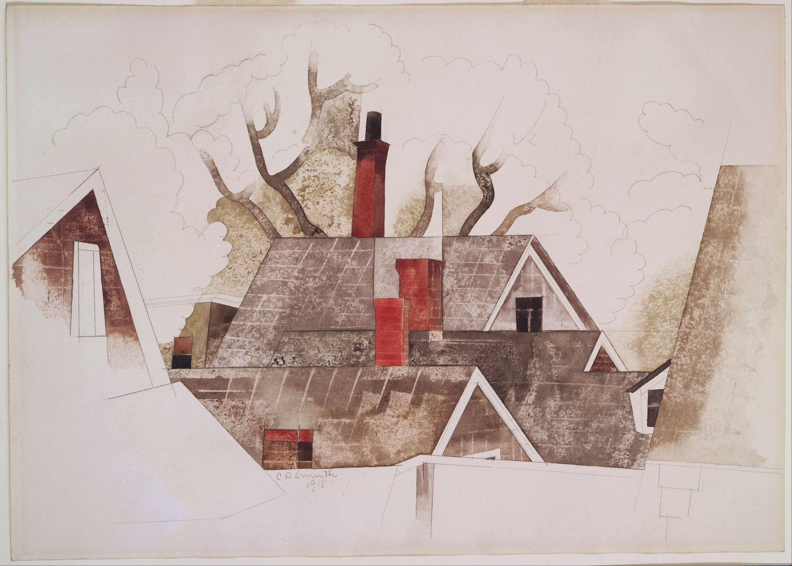
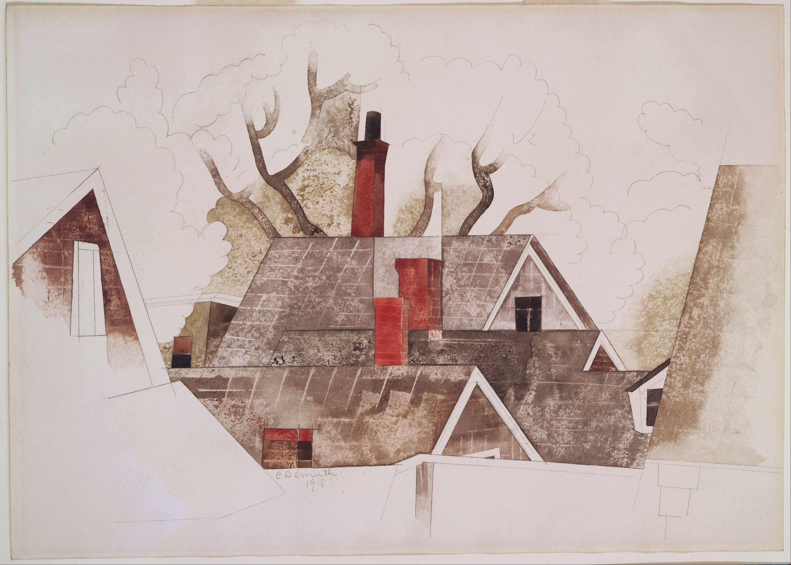

Watercolor Painting
Water Color Painting
Quick Facts on Watercolor Painting
- Used by prehistoric humans, but emerged during the Renaissance period
- Medium that uses pigment suspended in water-souble medium
- Can be applied to muliple surfaces, like paper, wood, fabric, and canvas
- Recognized for its uniqness of having to be applied perfectly the first time or else the effect is unclear and muddy

Famous Paintings That Use The Watercolor Medium
 Young Hare by Albrecht Durer

Red Chimneys by Charles Demuth
Young Hare by Albrecht Durer

Red Chimneys by Charles Demuth
 Light at Two Lights by Edward Hopper
Light at Two Lights by Edward Hopper
 The Blue Boat by Winslow Homer
The Blue Boat by Winslow Homer